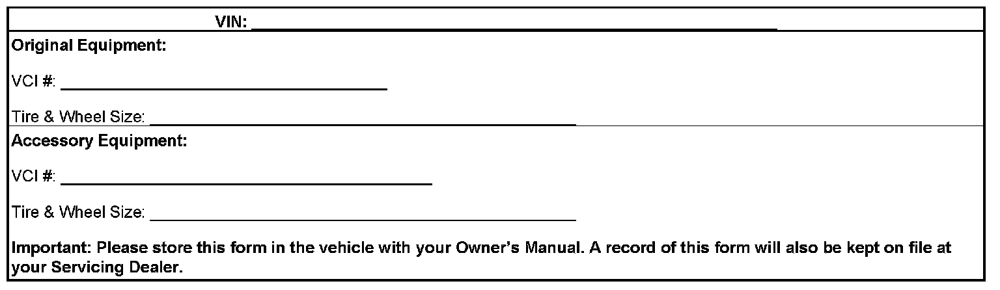

Wheels/Tires - 20/22 Inch Accessory Wheels And Tires: Overview
INFORMATIONBulletin No.: 06-03-10-001F
Date: October 08, 2008
Subject:
20 Inch and 22 Inch Accessory Wheels Available Through GM Accessories
Models
Supercede:
This bulletin is being revised to add 2009 model year. Please discard Corporate Bulletin Number 06-03-10-001E (Section 03 - Suspension).
The purpose of this bulletin is to provide a reference guide for the technician to upgrade a vehicle from factory wheels and tires to 20" or 22" wheels and tires which are available through GM Accessories. This guide will cover the required vehicle modifications module reprogramming and warranty information.
Important:
20" and 22" accessories wheels released for 2007 model year full-size utilities are NOT compatible/interchangeable with pre-2007 model year full-size trucks and utilities and vice versa. GM accessories wheels are validated and released for specific vehicle applications. In this case, a difference in wheel offsets exists between the different model years. Warranty coverage and dealer indemnification will not be provided in situations relating to incorrect application usage.
Vehicle Modifications
Tires (20")
GM offers three tires, the Bridgestone Dueler H/L Alenza P275/55R20 (TPC 1245MS), the Goodyear Eagle LS2 P275/55R20 (TPC 1245MS), or the Bridgestone Dueler A/T RH-S P275/55R20 (TPC 2348), to be used in conjuction with the 20" accessory wheels. The above tires have a TPC (Tire Performance Criteria) spec (molded on the sidewall) that meets or exceeds all Federal Safety guidelines.
Tires (22")
GM offers three tires, the Bridgestone Dueler H/L Alenza P285/45R22 (TPC 1261MS), the Goodyear Fortera SL P285/45R22 (TPC 1261MS) or the Bridgestone Dueler A/T RH-S P285/45R22 (TPC 2349), to be used in conjunction with the 22" accessory wheels. The above tires have a TPC (Tire Performance Criteria) spec (molded on the sidewall) that meets or exceeds all Federal Safety guidelines.
Important:
When mounting the tires, rubber lubricant, P/N 12345884 (in Canada, 5728223), must be used. Also, the vehicle should not be driven aggressively (hard acceleration or braking) for the first 24 hours after tire mounting to allow the lubricant to dry. Failure to do so may cause the tire to slip on the rim. This condition will affect wheel balance which could result in a vibration. Refer to Corporate Bulletin Number 08-03-10-004 for additional information.
Tire Label
Important:
All 20" tire and wheel packs are shipped with two different tire labels. Use tire label P/N 19165889 (road tire pressure of 32 psi) for the models listed in this bulletin.
After installing the recommended tires, place the provided tire label on the vehicle. The new tire label should be located within the red box, over the top of the original tire label found on the door jamb. To locate the label within the red box use the upper left hand edge of the red line as a guide. When properly placed, the new tire label will obscure the original tire information. Be sure that the surface is clean and dry. The surface temperature should not be less than 21°C (65°F). The label is provided as a guide for tire inflation pressures and information relevant to occupant/cargo capacities.
Tire Type/Pressure Selection
To provide a more accurate function of the Tire Pressure Monitoring System, it is necessary to update the Remote Control Door Lock Receiver (RCDLR) with the correct tire type and pressure information. Using the Tech 2(R), follow the steps listed below to select the appropriate tire type/pressure:
1. Install the scan tool.
2. Turn ignition ON with engine OFF.
3. Enter "Diagnostics" and build vehicle according to model year, vehicle line, etc.
4. Select "Body".
5. Select "RCDLR Module".
6. Select F2: Module Setup.
7. Select F5: Tire Type/Pressure Selection.
8. Select P-Metric Standard.
9. Select the front and rear tire pressure as noted on the new vehicle driver door placard sticker for the accessory wheels/tires.
10. Verify that the selections made are correct and press the enter key. The scan tool will flash "Procedure in Progress", then display "Procedure Complete".
11. Press the "exit" key to escape.
Tire Pressure Monitor (TPM) System
Important:
Tire pressure sensors for 2007-2009 model year full-size utilities are not compatible/interchangeable with pre-2007 model year full-size trucks and utilities and vice versa.
To avoid system malfunctions, it is necessary to install tire pressure sensors in the accessory wheels. Replacement sensors can be obtained or sensors from the OE wheels can be transferred to the accessory wheels. After the wheels are installed on the vehicle, it is necessary to learn the new sensor identification codes/locations into the remote control door lock receiver (RCDLR).
TPM Sensor Relearn Procedure
Important:
Before proceeding, ensure that no other learn procedure is being performed simultaneously or that tire pressures are not being adjusted on another TPM equipped vehicle within close proximity. Stray signals from other TPM equipped vehicles just driving by can be inadvertently learned. If any random horn chirps are heard from the vehicle while performing the learn procedure, most likely a stray sensor has been learned and the procedure will need to be cancelled and repeated. Under these circumstances, performing the TPM Learn Procedure away from other vehicles would be highly recommended. In the event a particular sensor pressure increase/decrease activation does not cause the horn to chirp, it may be necessary to rotate the wheel valve stem to a different position due to the sensor signal is being blocked by another component.
1. Place the ignition switch in the proper position as follows:
^ With standard ignition switch, place the switch in the RUN position.
^ With electronic keyless ignition, place the switch in the ACCY position.
2. Initiate the TPM Learn Mode using one of the following procedures:
^ Using a scan tool, initiate the TPM Learn Mode. A double horn chirp will sound indicating the Learn Mode has been enabled. The left front turn signal will also be illuminated.
^ On vehicles equipped with keyless entry, simultaneously press the keyless entry transmitters lock and unlock buttons until a double horn chirp sounds indicating the Learn Mode has been enabled. The left front turn signal will also be illuminated.
^ On vehicles not equipped with keyless entry, press and release the driver information center (DIC) INFO button until the RELEARN TIRE POSITIONS message appears on the DIC display. Press and hold the SET/RESET button until a double horn chirp sounds and the DIC displays a TIRE LEARNING ACTIVE message indicating the Learn Mode has been enabled. The left front turn signal will also be illuminated.
3. Starting with the left front tire, learn the tire pressure using one of the following methods:
^ Hold the antenna of the J 46079 aimed upward against the tire sidewall close to the wheel rim at the valve stem location. Press and release the activate button and wait for a horn chirp. Once the horn chirp has sounded, the turn signal in the next location to be learned will illuminate.
^ Keyless entry or DIC learn mode enable method only - Increase/decrease the tire pressure for 8-10 seconds then wait for a horn chirp. The horn chirp may occur before or up to 30 seconds after the 8-10 second pressure increase/decrease time period has been reached. Once the horn chirp has sounded, the turn signal in the next location to be learned will illuminate.
4. After the horn chirp has sounded and the right front turn signal is illuminated, repeat step 3 for the remaining 3 sensors in the following order:
1. Right front
2. Right rear
3. Left rear
5. After the LR sensor has been learned, a double horn chirp will sound indicating all sensors have been learned.
6. Turn OFF the ignition to exit the learn mode.
7. After the learn mode has been exited, adjust all tires to the recommended pressures indicated on the new tire label.
Spare Tire Hoist (22" Wheels Only)
Important:
The new spare tire hoist is necessary due to the added amount of stress that the 22" wheel/tire system causes to the factory installed tire hoist. The tire hoist is also needed even if you do not put a 22" spare under the vehicle.
Replace the spare tire hoist with P/N 19158309. This modification is required for the vehicles shown above when installing 22" wheels.
The following procedure should be followed for this modification.
1. If the vehicle is equipped with a spare tire stowage lock cylinder, open the spare tire lock cover on the bumper and using the ignition key, remove the lock.
2. Rotate the hoist shaft counterclockwise in order to lower the spare tire to the ground. Continue to rotate the shaft until the spare tire can be pulled out from under the vehicle and removed. If the spare tire does not lower to the ground, the secondary latch is engaged causing the tire not to lower.
3. If the secondary latch is engaged and the cable end is visible, perform the following procedure:
1. Tighten the cable by rotating the hoist shaft clockwise until you hear two clicks or feel it skip twice. You cannot overtighten the cable.
2. Loosen the cable by rotating the hoist shaft counterclockwise 3 or 4 turns.
3. If the spare tire can be lowered, repeat steps 1 and 2 to see if the spare tire can be removed.
4. If the spare tire cannot be lowered, rotate the hoist shaft counterclockwise until approximately 152 mm (6 in) of cable is exposed.
5. Raise and support the vehicle.
6. Place a transmission jack, or equivalent, under the spare tire.
7. Position the center of the transmission jack under the secondary latch release button at the center of the spare tire. Arrange the arms of the transmission jack so they will support the tire after it has been released.
8. Raise the jack until the spare tire stops moving upward and is firmly held in place, releasing the secondary latch.
9. Lower the tire. If the spare tire is hanging by the cable, rotate the hoist shaft counterclockwise until the tire is low enough to remove.
4. If the secondary latch is engaged and the cable end is NOT visible, perform the following procedure:
1. Raise and support the vehicle.
2. Place a transmission jack, or equivalent, under the spare tire.
3. Position the center of the transmission jack under the secondary latch release button at the center of the spare tire. Arrange the arms of the transmission jack so they will support the tire after it has been released.
4. Raise the jack until the spare tire stops moving upward and is firmly held in place, releasing the secondary latch.
5. Lower the tire and remove it from the jack.
5. Raise and support the vehicle if it is not already raised.
6. Depress the tabs, remove the guide shaft from the hoist collar, and slide the shaft toward the bumper.
7. Remove the collar from the hoist.
8. Remove the bolt.
9. Remove the hoist from the bracket.
10. Remove the spare tire hoist shaft guide from the bumper.
11. Install the spare tire hoist shaft guide to the bumper.
12. Install the hoist to the crossmember.
13. Install the bolt.
Tighten
Tighten the bolt to 40 Nm (30 lb ft).
14. Install the collar to the hoist.
15. Install the shaft to the hoist.
16. Install the spare tire to the hoist.
17. Rotate the hoist shaft clockwise until the spare tire is in position and the hoist clicks two times or it skips twice. You cannot overtighten the cable.
18. Remove the safety stands.
19. Lower the vehicle.
20. Install the spare tire stowage lock cylinder.
Warranty Information
GM Warranty Claims Processing
Only GM dealerships have the ability to file warranty claims for GM Parts and Accessories. Therefore, any warranty claims filed against such parts must be handled by the servicing GM dealership. This includes those parts purchased from a GM-approved ADI (Accessory Distributor / Installer).
ACCESSORY WHEEL AND TIRE INFORMATION FORM

You have just modified your vehicle by installing an "Accessory Package" which includes Wheels and Tires. This form contains important information about your accessory installation. In an effort to provide superior service to you, our customer, we ask that you please present this form to your Servicing Dealer when removing or installing wheels and tires on your vehicle. This form contains important information necessary to service your vehicle.

Disclaimer